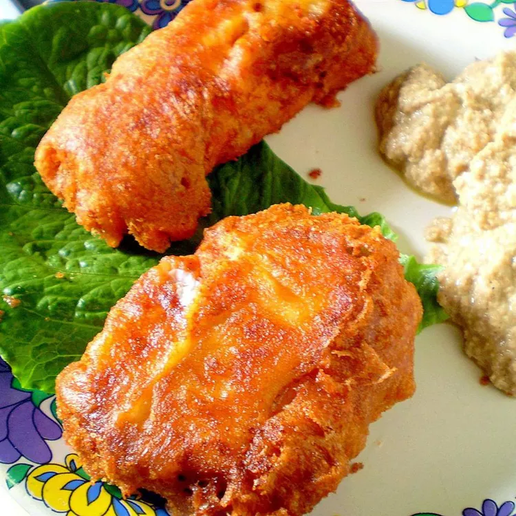

Crispy Fried Fish

Description
This fried fish recipe features a beer batter and a spicy dry dredge to create a truly crispy dish.
Ingredients
- 1 and 1/2 cups beer
- 1 cup all-purpose flour
- 1 large egg
- 1 teaspoon garlic powder
- 1/2 teaspoon salt
- 1/2 teaspoon ground black pepper
- 1 pound cod fillets
- 2 cups crushed cornflake crumbs
- 1 teaspoon Cajun seasoning
- 1 quart oil for frying
Steps
- Beat together beer, flour, egg, garlic powder, salt, and pepper in a medium bowl until smooth. Add cod fillets; stir gently until well coated.
- Mix together cornflake crumbs and Cajun seasoning in a separate medium bowl until well combined. Dip cod in cornflake mixture to thoroughly coat all sides.
- Heat oil in a large, heavy skillet or deep fryer to 365 degrees F (185 degrees C). Fry cod in hot oil until golden brown and flesh is easily flaked with a fork. Drain on a paper towel-lined plate.